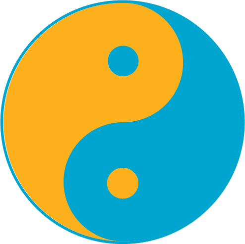

The Sun’s location on the Zodiac wheel, at the moment of your birth determines your Sun Sign. This is your basic Personality Archetype, Vital Force, Your Character, Your Consciousness. Knowing your Sun Sign helps you Live in your Highest Potential
The Elements represent your purpose in life. There are 4 archetypes and each archetype has a gender - yin or yang, masculine or feminine. Fire & Air are masculine (yang), Water & Earth are feminine (yin)
|
Masculine Signs Yang: Masculine, Day, Sun, Inhale, Hot, Active, Radiant, Extroverted, Assertive, Bright, Loud, External Expression. |
Feminine Signs Yin: Feminine, Night, Moon, Exhale, Cold, Reactive, Reflective, Introverted, Nurturing, Supportive, Internal Expression. |
|
|
|
Air Signs Gemini - Libra - Aquarius Intellects and Teachers that teach how to work smarter, not harder. |

The Neighboring Signs of Air and Water make Best Mates and Life Partners. ‘Sharing Wisdom’ |

Water Signs Cancer - Scorpio - Pisces People full of Imagination and Flare. |
|
Opposite signs: Fire and Air make Best Friends and Business Partners. ‘Sharing Ideas’ |

Fire Signs Aires - Leo - Sagitarius The First Responders of stressful situations - the Warriors of the Zodiac. |
|
|
Fire Signs Aires - Leo - Sagitarius The First Responders of stressful situations - the Warriors of the Zodiac. |
The Neighboring Signs of Fire and Earth make Best Mates and Life Partners. ‘Sharing Wisdom’ |

Earth Signs Taurus - Virgo - Capricorn Hard Working people that can always be counted upon. |
For competition purposes, each of you have been given a power mode (approach or style). I'm sure you have all heard of the game Rock. Paper. Scissors. The powers of the Zodiac are where the meaning of that game came from.

|
The 7 days of the week were named in Honor of the 7 classic Planets known to the ancients as "The 7 Sacred Luminaries" or "The 7 Sacred Deities".
Sunday - Sun’s Day
Monday - Moon’s Day
Tuesday - Mars's day
Wednesday - Mercury’s Day
Thursday - Jupiter's day
Friday - Venus's day
Saturday - Saturn's day
Knowing the attributes of the specific Planet energies helps you better plan and flow with the fluctuating energies of each day of the week.
Now you're starting to see why it can feel like an uphill battle to accomplish a list of tasks in a Monday (Moon’s Day)! Saturn’s day is a great day to get things done, while Sunday is a day to rest and recharge.
Each Zodiac sign is associated with a planet. Your corresponding planet is also associated with a metal which shares the same frequency or vibration.
|
Sun - LEO ‘I Know’ Independent, Goal-Oriented, Innovative, Consciousness, Individuality, Leadership, Confidence, Creativity, Masculinity. Metal : Gold (Virtue = Humility / Sin = Pride ) Where You Shine |
|
|
|
Moon - CANCER ‘I See’ Intuitive, Unifying, Influential, Habits, Instincts, Behaviors, The Unconscious, Memories, Femininity, Domesticity. Metal : Silver (Virtue = Balance / Sin = Gluttony ) How You React |
|
Mercury - GEMINI - VIRGO ‘I Speak’ Communication, Intelligence, Technology, Information, Ideas, Business, Education, Curious, Adaptable, Social. Metal : Mercury (Virtue = Diligence / Sin = Sloth ) How You Listen and Learn |
|
|
Venus - TAURUS - LIBRA ‘I Love’ Beauty, Harmony, Supportive, Protected, Romantic, Attraction, Profit, Relationships, Art, Pleasure. Metal : Copper (Virtue = Gratitude / Sin = Envy ) Love, Pleasure, Beauty |
|
|
Mars - ARIES - SCORPIO ‘I Do’ Action, Libido, Passion, Courage, Desire, Assertion, Aggression, Drive, Competition, Conflict, Determination. Metal : Iron (Virtue = Loyalty / Sin = Lust ) The Passion Is The Driving Action |
|
|
Jupiter - SAGITTARIUS - PISCES ‘I Feel’ Growth, Expansion, Healing, Prosperity, Good Fortune, Miracles, Wealth, Religion, Court, Higher Education, Wisdom, Influence, Prosperity. Metal : Tin (Virtue = Charity / Sin = Greed ) Growth & Abundance |
|
|
|
Saturn - CAPRICORN - AQUARIUS ‘I Am’ Concentration, Permanence, Karma, Strength, Perseverance, Discipline, Restriction, Authority, Law, Life, Lessons, Obstacles, Tradition, Responsibility, Tenacity, Ambition, Productivity. Metal : Lead (Virtue = Patience / Sin = Wrath ) Discipline & Structure |
A Chakra is an energy center in the body. There are 7 Chakras in the Physical Body. These Energy Centers work to keep our Physical, Emotional and Mental States in Balance. Each Chakra has a Ruling Planetary Energy and Displays the Attributes of that Energy. You have the Energy of the Whole Solar System Within You! The 7 Universal Laws also Correspond to each Chakra. These 7 Laws help clarify how we Interrelate with the Universe through and within our Own Bodies.